经典的数据集，包括泰坦尼克号上 2224 名乘客和船员中 891 名的人口学数据和乘客基本信息，来自kaggle。
1 | import pandas as pd |
1 | titanic = pd.read_csv('titanic-data.csv') |
问题
- 探索titanic数据的问题
- 找到生还率最高的人群
数据探索
1 | titanic.head() |
| PassengerId | Survived | Pclass | Name | Sex | Age | SibSp | Parch | Ticket | Fare | Cabin | Embarked | |
|---|---|---|---|---|---|---|---|---|---|---|---|---|
| 0 | 1 | 0 | 3 | Braund, Mr. Owen Harris | male | 22.0 | 1 | 0 | A/5 21171 | 7.2500 | NaN | S |
| 1 | 2 | 1 | 1 | Cumings, Mrs. John Bradley (Florence Briggs Th… | female | 38.0 | 1 | 0 | PC 17599 | 71.2833 | C85 | C |
| 2 | 3 | 1 | 3 | Heikkinen, Miss. Laina | female | 26.0 | 0 | 0 | STON/O2. 3101282 | 7.9250 | NaN | S |
| 3 | 4 | 1 | 1 | Futrelle, Mrs. Jacques Heath (Lily May Peel) | female | 35.0 | 1 | 0 | 113803 | 53.1000 | C123 | S |
| 4 | 5 | 0 | 3 | Allen, Mr. William Henry | male | 35.0 | 0 | 0 | 373450 | 8.0500 | NaN | S |
数据字段说明
PassengerId：乘客编号，Survived：乘客是否存活，Pclass：乘客所在的船舱等级；Name：乘客姓名，Sex：乘客性别，Age：乘客年龄，SibSp：乘客的兄弟姐妹和配偶数量，Parch：乘客的父母与子女数量，Ticket：票的编号，Fare：票价，Cabin：座位号，Embarked：乘客登船码头
1 | titanic.info() |
<class 'pandas.core.frame.DataFrame'>
RangeIndex: 891 entries, 0 to 890
Data columns (total 12 columns):
PassengerId 891 non-null int64
Survived 891 non-null int64
Pclass 891 non-null int64
Name 891 non-null object
Sex 891 non-null object
Age 714 non-null float64
SibSp 891 non-null int64
Parch 891 non-null int64
Ticket 891 non-null object
Fare 891 non-null float64
Cabin 204 non-null object
Embarked 889 non-null object
dtypes: float64(2), int64(5), object(5)
memory usage: 83.6+ KB
数据异常观察
座位号数据较少只有204条，猜测可能因为低等仓不分座位吧。
年龄数据有714条，缺了177条，对于买船票的人来说登记年龄不是必须的，所以这个量属于正常。
登船码头数据缺了两条，可能是返程的船员或者偷偷溜上船。
1 | embarked_group = titanic.groupby('Embarked') |
Embarked
C 69
Q 4
S 129
Name: Cabin, dtype: int64
Embarked
C 168
Q 77
S 644
Name: PassengerId, dtype: int64
验证猜测：座位号数据较少只有204条，猜测可能因为低等仓不分座位吧。
根据数据来看每个仓位都有座位号缺失的情况，看起来应该是座位登记表跟着titanic遗失了，并不是因为低等仓不分配座位。
1 | titanic.isnull().groupby('Embarked').groups[True] |
Int64Index([61, 829], dtype='int64')
1 | print titanic.iloc[61] |
PassengerId 62
Survived 1
Pclass 1
Name Icard, Miss. Amelie
Sex female
Age 38
SibSp 0
Parch 0
Ticket 113572
Fare 80
Cabin B28
Embarked NaN
Name: 61, dtype: object
PassengerId 830
Survived 1
Pclass 1
Name Stone, Mrs. George Nelson (Martha Evelyn)
Sex female
Age 62
SibSp 0
Parch 0
Ticket 113572
Fare 80
Cabin B28
Embarked NaN
Name: 829, dtype: object
PassengerId False
Survived True
Pclass True
Name False
Sex True
Age False
SibSp True
Parch True
Ticket True
Fare True
Cabin True
Embarked False
dtype: bool
验证猜测：登船码头数据缺了两条，可能是返程的船员或者偷偷溜上船。
首先找到两条登船码头缺失的记录
接着看了下两条记录的不同之处，接着发现了一些共同点，比如船票是同一张，都是女性且都获救等等，船票是同一张有些可疑；
1 | ticket_count = titanic.groupby('Ticket')['PassengerId'].count() |
<matplotlib.axes._subplots.AxesSubplot at 0x11988ad10>
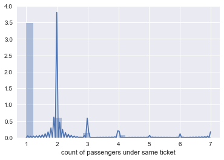
根据使用同张船票的乘客分布来看，大部分乘客都是一张票但是共用船票的情况也很常见，所以确实存在套票等
单变量探索
1 | titanic.describe() |
| PassengerId | Survived | Pclass | Age | SibSp | Parch | Fare | |
|---|---|---|---|---|---|---|---|
| count | 891.000000 | 891.000000 | 891.000000 | 714.000000 | 891.000000 | 891.000000 | 891.000000 |
| mean | 446.000000 | 0.383838 | 2.308642 | 29.699118 | 0.523008 | 0.381594 | 32.204208 |
| std | 257.353842 | 0.486592 | 0.836071 | 14.526497 | 1.102743 | 0.806057 | 49.693429 |
| min | 1.000000 | 0.000000 | 1.000000 | 0.420000 | 0.000000 | 0.000000 | 0.000000 |
| 25% | 223.500000 | 0.000000 | 2.000000 | 20.125000 | 0.000000 | 0.000000 | 7.910400 |
| 50% | 446.000000 | 0.000000 | 3.000000 | 28.000000 | 0.000000 | 0.000000 | 14.454200 |
| 75% | 668.500000 | 1.000000 | 3.000000 | 38.000000 | 1.000000 | 0.000000 | 31.000000 |
| max | 891.000000 | 1.000000 | 3.000000 | 80.000000 | 8.000000 | 6.000000 | 512.329200 |
年龄分布：
1 | titanic['Age'].hist() |
<matplotlib.axes._subplots.AxesSubplot at 0x10f72f350>
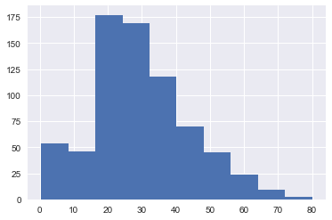
PS:Age属性缺失的数据已经被自动过滤
年龄是个连续变量，但是按照人们的习惯在生活中对不同年龄段的人会区别对待。
所以通过计算把年龄段转换为分类变量:把18岁以下的作为『儿童』，18~50岁之间的作为『中年』，50岁以上的作为『老年』。
下面也会把根据年龄的分组作为分析的一个主要变量。
Age属性缺失的数据不转换。
1 | def getAgeGroup(age): |
<matplotlib.axes._subplots.AxesSubplot at 0x10f937ad0>
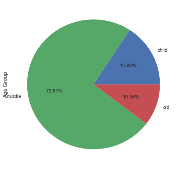
根据年龄分组后的饼图，可以看出儿童占有年龄统计乘客数的15.83%，还有10.36%是老人，剩下73.81%是中年人
性别分布
1 | sex_group = titanic.groupby('Sex')['PassengerId'].count() |
<matplotlib.axes._subplots.AxesSubplot at 0x1114facd0>
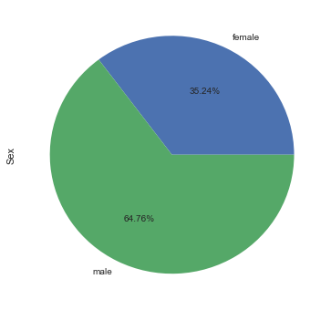
从性别分布来看男性占了64.76%，女性占了35.24
船票价格分布
1 | titanic['Fare'].hist() |
<matplotlib.axes._subplots.AxesSubplot at 0x113816bd0>
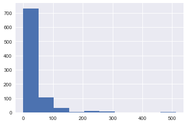
从船票价格分布来看，绝大多数乘客(约750位)的船票在0~50美元区间，100位乘客的船票在50~100美元，最高的票价达到500美元
乘客的兄弟姐妹和配偶数量分布
1 | titanic['SibSp'].hist() |
<matplotlib.axes._subplots.AxesSubplot at 0x113a33750>
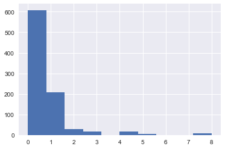
大多数乘客(600个左右)都没有兄弟姐妹或配偶，有200个乘客有一个兄弟姐妹或配偶，零星乘客有2个及以上兄弟姐妹及配偶
乘客的父母与子女数量
1 | titanic['Parch'].hist() |
<matplotlib.axes._subplots.AxesSubplot at 0x113b88710>
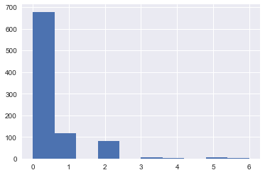
大多数乘客都没有和父母或子女同行，约有100个乘客与一个父母或子女同行，约有90个乘客与两个父母或子女同行
舱位分布
1 | pclass_group = titanic.groupby('Pclass')['PassengerId'].count() |
<matplotlib.axes._subplots.AxesSubplot at 0x115f2af90>
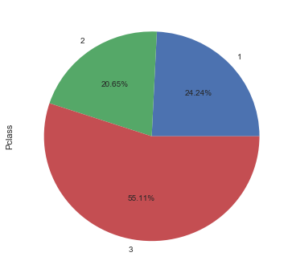
从比例分布看三等舱占55%，二等舱最少占21%左右，一等舱约占24%
1 | pclass_group.plot.bar() |
<matplotlib.axes._subplots.AxesSubplot at 0x1144c9a90>
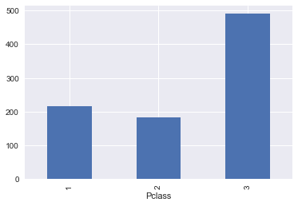
从数量分布来看三等舱有500个左右，一等舱、二等舱均在200上下
1 | embarked_group = titanic.groupby('Embarked')['PassengerId'].count() |
<matplotlib.axes._subplots.AxesSubplot at 0x114443050>
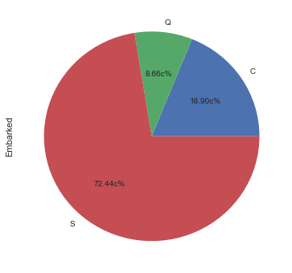
登船码头的比例分布：
72.44%的乘客都从『S』码头登船，18.9%的乘客从『C』码头登船，8.66%的乘客从『Q』码头登船
1 | embarked_group.plot.bar() |
<matplotlib.axes._subplots.AxesSubplot at 0x1146f9990>
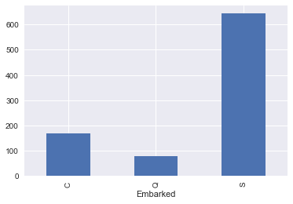
1 | survived_group = titanic.groupby('Survived')['PassengerId'].count() |
<matplotlib.axes._subplots.AxesSubplot at 0x119d00810>
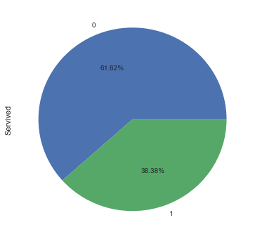
样本中幸存者的比例在38.38%，遇难者占了61.62%
1 | survived_group.plot.bar() |
<matplotlib.axes._subplots.AxesSubplot at 0x114ba74d0>
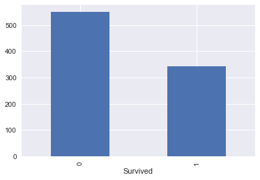
样本中有550位左右遇难者和340位左右的幸存者
幸存与各变量的相关度分析
首先看下各变量和是否幸存之间的相关度。
为了计算方便把 Sex 和 AgeGroup 都转换为数字。
1 | titanic['SexBool'] = titanic['Sex'] == 'male' |
Survived Pclass Age SibSp Parch SexBool \
PassengerId -0.005007 -0.035144 0.036847 -0.057527 -0.001652 0.042939
Survived 1.000000 -0.338481 -0.077221 -0.035322 0.081629 -0.543351
Pclass -0.338481 1.000000 -0.369226 0.083081 0.018443 0.131900
Age -0.077221 -0.369226 1.000000 -0.308247 -0.189119 0.093254
SibSp -0.035322 0.083081 -0.308247 1.000000 0.414838 -0.114631
Parch 0.081629 0.018443 -0.189119 0.414838 1.000000 -0.245489
Fare 0.257307 -0.549500 0.096067 0.159651 0.216225 -0.182333
SexBool -0.543351 0.131900 0.093254 -0.114631 -0.245489 1.000000
AgeGroupNumber -0.101775 -0.294968 0.833260 -0.370322 -0.262033 0.107128
AgeGroupNumber
PassengerId 0.020980
Survived -0.101775
Pclass -0.294968
Age 0.833260
SibSp -0.370322
Parch -0.262033
Fare 0.065379
SexBool 0.107128
AgeGroupNumber 1.000000
SexBool -0.543351
Pclass -0.338481
AgeGroupNumber -0.101775
Age -0.077221
SibSp -0.035322
PassengerId -0.005007
Parch 0.081629
Fare 0.257307
Survived 1.000000
Name: Survived, dtype: float64
可以看出来和是否幸存相关度最高的分别是 SexBool、Pclass、AgeGroupNumber。
用这三个属性分别和Survived结合进行观察。
1 | titanic.groupby(['Survived', 'Sex'])['PassengerId'].count().plot.pie(figsize=(6, 6), autopct='%.2f%%') |
<matplotlib.axes._subplots.AxesSubplot at 0x11127ce50>
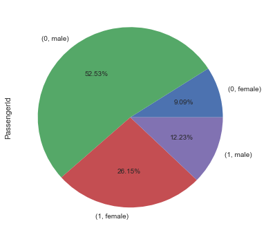
结合是否幸存和性别来看，占样本数26%的女性幸存，只有占样本数12%的男性幸存
1 | titanic.groupby('Sex')['Survived'].mean().plot.bar() |
<matplotlib.axes._subplots.AxesSubplot at 0x113a3bdd0>
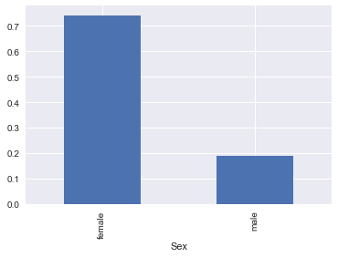
根据性别和幸存率来看，女性的幸存比率达到75%左右，而男性在20%左右
1 | titanic.groupby(['Survived', 'Pclass'])['PassengerId'].count().plot.pie(figsize=(6, 6), autopct='%.2f%%') |
<matplotlib.axes._subplots.AxesSubplot at 0x1141b91d0>
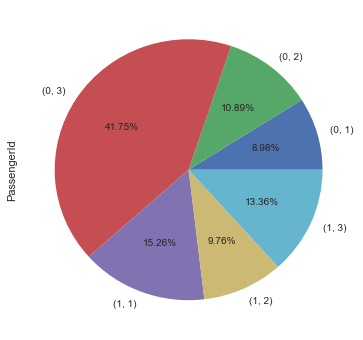
从比例分布看一等舱的幸存者比例占样本乘客数的15.26%，二等舱占9.76，三等舱占13.36 而遇难者比例三等舱占了41.75，二等舱占10.89，一等舱占8.98%
1 | titanic.groupby('Pclass')['Survived'].mean().plot.bar() |
<matplotlib.axes._subplots.AxesSubplot at 0x1143cdf10>
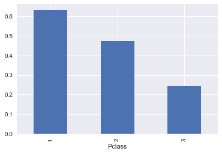
综合船舱等级和幸存率来看：一等舱的幸存率最高达到65%，二等舱幸存率接近50%，三等舱幸存率只有25%左右
1 | titanic.groupby(['Survived', 'AgeGroup'])['PassengerId'].count().plot.pie(figsize=(6, 6), autopct='%.2f%%') |
<matplotlib.axes._subplots.AxesSubplot at 0x11456c610>
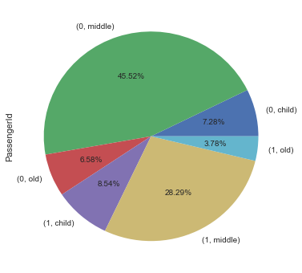
结合年龄段来看，幸存者占样本比例最高的是中年人占28.29，儿童占8.54，老人占3.78
而遇难者占样本比例最高的也是中年人占45.52%，儿童占7.28，老人占6.58%
1 | titanic.groupby('AgeGroup')['Survived'].mean().plot.bar() |
<matplotlib.axes._subplots.AxesSubplot at 0x114595a10>
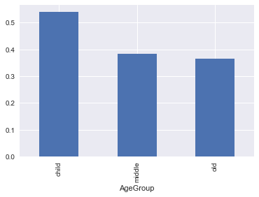
结合年龄段和幸存率看儿童的幸存率最高55%左右，成年人的幸存率比较接近都在35%~40%之间
1 | final_count = titanic.groupby(['Sex', 'AgeGroup', 'Pclass'])['PassengerId'].count() |
<matplotlib.axes._subplots.AxesSubplot at 0x11a68fc90>
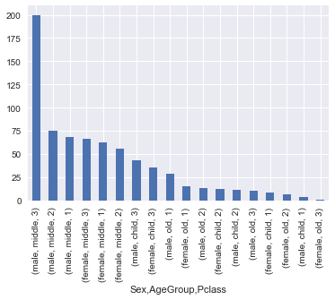
综合性别、年龄段、船舱等级纬度后样本数量分布如图（已过滤无年龄数据的样本）
人数最多的是三等舱的男性中年乘客有200位左右，而人数最少的是三等舱的女性老人
1 | final_survival_rate = titanic.groupby(['Sex', 'AgeGroup', 'Pclass'])['Survived'].mean() |
<matplotlib.axes._subplots.AxesSubplot at 0x11a418650>
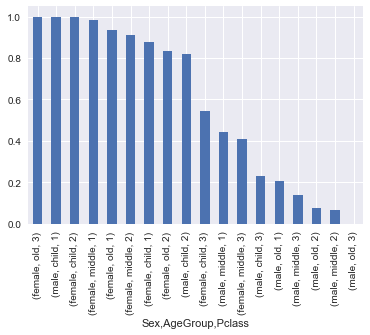
综合性别、年龄段、船舱等级纬度后幸存率分布如图（已过滤无年龄数据的样本）
其中一等舱的男孩和二等舱的女孩幸存率都是100%，三等舱的女性老人幸存率也达到100%，由于样本过少参考意义有限
1 | sns.factorplot(x='AgeGroup', y='Survived', col="Pclass", data=titanic, hue='Sex') |
<seaborn.axisgrid.FacetGrid at 0x118e368d0>
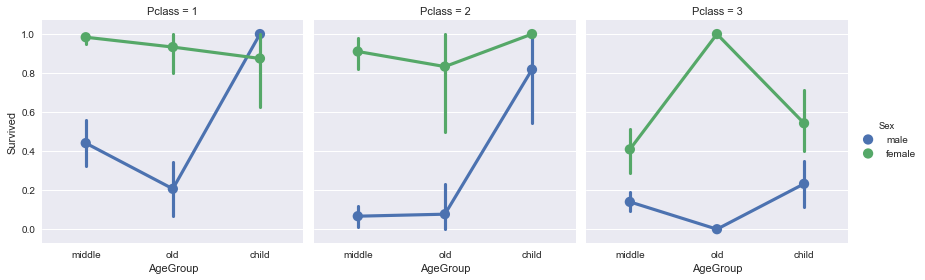
综合性别、年龄段、船舱等级纬度后幸存率分布如图（已过滤无年龄数据的样本）
通过该图可以明显看出性别对于幸存率的影响最为明显，随着船舱等级降低幸存率也在降低以及各年龄段在各等级船舱的幸存率分布
1 | final_result = pd.DataFrame({'survival':final_survival_rate, 'count':final_count}) |
count survival
Sex AgeGroup Pclass
male child 1 4 1.000000
female child 2 12 1.000000
old 3 1 1.000000
middle 1 62 0.983871
old 1 15 0.933333
middle 2 56 0.910714
child 1 8 0.875000
old 2 6 0.833333
male child 2 11 0.818182
female child 3 35 0.542857
male middle 1 68 0.441176
female middle 3 66 0.409091
male child 3 43 0.232558
old 1 29 0.206897
middle 3 200 0.140000
old 2 13 0.076923
middle 2 75 0.066667
old 3 10 0.000000
综合性别、年龄段、船舱等级纬度后幸存率排序如该表格所示（已过滤无年龄数据的样本）
结论
综合以上分析，对生存率影响较大的变量有性别、船舱等级和年龄段。
其中年龄段数据由于部分年龄数据丢失而被过滤，对整体结论有较小影响。
Titanic 上的男士都是不折不扣的绅士，他们把生存的机会让给了女士。只从性别看男性的幸存率只有20%左右，而女性幸存率高达75%。
生命不分贵贱，可是由于船舱位置的原因一等舱的幸存率达到65%，而二等舱有将近一半人幸存，幸存率为47%左右，逃生位置不好的三等舱只有25%左右的乘客幸存。
儿童相对于成年人来说在面对营救时也获得了优先，幸存率在55%左右，而中年和老年人的幸存率都不到40%。
从综合的纬度来看一等舱和二等舱的女性以及儿童都获得了比较高的幸存率在80%以上。
而三等舱除了样本量较少的一位女性老人获救而达到100%的幸存率以外，连女孩儿的幸存率也只是刚刚达到54%。
而幸存率最低的则是二三等舱的男性，不论年龄，都把获救的机会留给了别人，令人敬佩和惋惜。
该数据集样本并不是全部数据，从Titanic幸存者报告来看，真正的幸存乘客有492名，而数据集中的幸存乘客为340位；但是该数据集已经占了总体的70%所以我们的分析接近总体数据的分析。
在涉及到年龄变量的统计时过滤掉了没有年龄数据的乘客，占样本比例的20%左右，对分析结果有较小的影响。
还有一些比如获救船员数据，是否有宠物获救占据救生艇位置，乘客身体状况以及舱位与船舱出口距离等应该都对幸存率有影响。